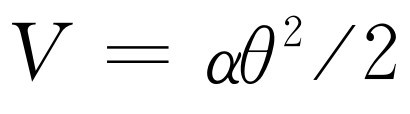
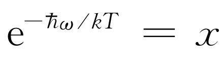

第41章 布朗运动
§41-1 能量均分
布朗运动是一位植物学家布朗于1827年发现的。当他研究微生物时，他注意到植物花粉的细小微粒在他正在用显微镜观察的液体中到处游来游去，这时，他很明智地领悟到这些东西不是生物，而是在水中沿四周运动的微小的尘粒。事实上，为了帮助说明这一点和生命无关，布朗取一块从地下挖出的年代久远的石英岩，石英岩内含有一些水。这种水必然已贮存了数百万年以上，但是，在这样的水中布朗也看到了同样的运动。人们看到的是非常微小的粒子一直在不停地晃动。
以后，人们证明了这是分子运动 的一种效应，我们可以通过想象在游艺场中有一个很大的可以推动的球来定性地理解这种效应。假定我们从很远的地方看去，下面有一大堆人，所有的人都从各个方向推动着这个球。我们看不到人，因为我们想象离开球太远了，但可以看见球，并且注意到它相当无规则地来回运动。由前几章讨论的定理我们知道，悬浮在液体或气体中的微粒的平均动能是3kT /2，即使这个微粒远比一个分子重，情况仍然如此。如果它很重，那就意味着速率相对地较低。但实际上速率并不那么慢。事实上，我们不能轻易地看到这样一个粒子的速率，因为尽管平均动能是3kT /2，但这对于一个直径约为1～2μ m的物体，它的速率大概是1 mm·s-1 ，这甚至在显微镜下也是很难观察到的，因为粒子不断地改变运动方向，而且没有任何确定的目标。在本章的最后一节我们将讨论它到底能跑多远。这个问题是本世纪初由爱因斯坦首先予以解决的。
附带说一下，当我们讲到粒子的平动动能是3kT /2时，我们声称这个结果是从分子动理学理论，也就是从牛顿定律推出的。我们将发现能从分子动理论推导出种种令人惊奇的结果。由这么一点点东西就能推导出这么多的结果，这是极有意义的。当然，我们并不是说牛顿定律只是“一点点东西”——实际上，这已经足够了——这里所说的是我们 并没有做很多事。那么，怎么能够得出这么多结果呢？答案是，我们一直在作一个重要的假设，那就是，如果某一给定系统在某个温度下处在热平衡状态，那么它与任何处在相同温度下的其他系统 也处于热平衡状态。例如，如果我们想看看一个粒子与水分子发生实际碰撞时如何运动，可以想象在这里存在着由另一类微粒组成的气体，它们非常微小（我们假设），不会与水分子发生相互作用，而只与原来的粒子“强烈地”相互碰撞。假定这个粒子有一根伸出的刺，其他所有微粒能作的就是与这根刺碰撞。对这种温度为T 的假想微粒气体，我们知道得很清楚，它是一种理想气体。水是复杂的，但理想气体是简单的。现在，这种粒子必然与这种微粒气体处于平衡之中 。因此，粒子的平均运动必然由与气体微粒的碰撞所决定，因为如果相对于水来说它不是以正确的速度运动，而是比方说运动得更快的话，这就意味着微粒将得到能量而变得比水更热。但是整个系统开始时温度相同，而且我们又假定，某个系统一旦处于平衡状态后，它将保持平衡——它的某些部分不会自发地变热，其他部分也不会自发地变冷。
这个命题是正确的，可以根据力学定律加以证明，但证明非常复杂，而且只有利用高等力学才能作出。在量子力学中证明它比经典力学容易得多。经典力学的证明首先由玻尔兹曼作出，但现在我们简单地把它看作是正确的，于是可以证明粒子在与假想微粒碰撞时，必定具有3kT /2的能量，因而当我们拿走假想的微粒而让它和同样温度的水分子碰撞时，它也必然具有3kT /2的能量，所以它的平均动能是3kT /2。这是一种奇特的论证方法，但它是完全正确的。
除去最初发现布朗运动的那种胶体粒子的运动外，在实验室或其他场合的许多现象中也能见到布朗运动。如果我们要制作一个尽可能精密的仪器，比方说一个非常灵敏的冲击电流计，里面有一块很小的反射镜，悬挂在一根细石英丝上（图41-1），那么这面小镜不会停止不动，而是不停地来回晃动——所有时间都在不停地 晃动——因此当我们往镜面上投射一束光线，并观察光点的位置时，由于镜面老是在晃动，因此这不是一台理想的仪器。为什么？因为这面镜子平均说来具有大小为kT /2的平均转动动能。
那么，镜面来回晃动的“方均”角是多少？假如我们轻叩小镜的一侧，并观察它来回振动一次得花多长时间，就能得出它的固有振动周期，我们还知道它的转动惯量I 。我们又知道转动动能的公式，它由式（19.8）给出，即T =Iω 2 /2。这是动能，而势能则正比于转动角度的平方，即 。但是，如果我们知道了周期t 0 ，并由此算出固有频率ω 0 =2π /t 0 ，则势能就是 。现在我们知道平均动能是kT /2，由于它是谐振子，平均势能也是kT /2。于是有

或
用这种方法我们可以计算电流计镜面的振动，并由此求出我们这台仪器的使用限度。如果我们想使振动小些，可以冷却镜子。一个有趣的问题是，在哪里冷却它？这要看它受到的“撞击”来自何方。如果来自悬丝，就在顶部冷却它，如果镜子周围是气体，而撞击主要来自气体分子的碰撞，那么更好的办法是冷却气体。事实上，只要我们知道振动的阻尼 来自何处，可以证明这常常也就是涨落的起源 ，这一点以后我们还将回过头来谈。
使人感到十分惊奇的是，在电路
中，也会出现同样的情况。假设我们要制作一个对某一确定的频率非常灵敏和非常精确的放大器，在输入端有一个谐振回路（图41-2），以使它对于那个确定的频率非常灵敏，就像一个质量很高的无线电接收机一样。如果我们要研究这个电路本身正常工作的最低的极限，就可以在电感上取出电压输入到放大器的其余部分。当然，任何这样的电路总会有一些损失。这不是一个理想的谐振回路，但它的性能非常好，比方说在回路中还有一点小的电阻（我们把电阻在图上画得能看出来，但假定它很小）。现在我们希望找出：电感上的电压涨落有多大？答案
是，我们知道LI
2
/2是“动能”——即谐振回路中与线圈有关的能量（第25章），因此LI
2
/2的平均值等于kT
/2，这告诉我们均方根电流的大小，而从均方根电流又能求出均方根电压。如果要求出电感两端的电压，则公式为 ，而电感上的电压绝对值平方的平均值是
，代入L
〈I
2
〉/2=kT
/2，就得到
，而电感上的电压绝对值平方的平均值是
，代入L
〈I
2
〉/2=kT
/2，就得到
这样我们就能设计电路，并指出何时会在电路中出现所谓约翰逊（Johnson）噪声 ，即与热涨落有关的噪声！
这一种涨落来自何处？它们也是由电阻器 产生的。实际上，由于电阻器内的电子与其他物质处于热平衡，因而它们有规则地来回跳动，并造成电子密度的涨落。这种涨落形成微小的电场，驱动谐振回路。
电子工程师用另一种方式来解答这个问题。从物理上来说，电阻器等效于噪声源。然而我们可以用一个假想的电路代替那个常能造成噪声的真实物理电阻的实际电路，假想的电路中包括一个很小的表示 噪声的发生器，而现在的电阻器则是某种理想化的不产生噪声的东西。所有的噪声都在假想的发生器内。这样，如果已知电阻器产生噪声的特性，并且有了相应的公式，就能算出电路中噪声的响应。所以，我们需要一个噪声涨落的公式。而电阻器引起的噪声包含了所有的频率，因为电阻器本身并不会产生谐振。当然，谐振回路只能“收听”到接近谐振频率的那一部分频率，但电阻器中却具有许多不同的频率。我们可以用下述方式来描写噪声发生器的强度：如果设想电阻器直接并联在噪声发生器上，则它所吸收的平均功率应当是〈E 2 〉/R ，这里E 是发生器上的电压。但是我们想更详细地知道在每种频率下的功率是多少。在任何一个频率上只有很小的功率，它是一个分布。令P （ω ）dω 为发生器在频率为ω 而间隔为dω 内提供相同电阻器的功率。可以证明（我们将对另一种情况来证明，但数学上是完全相同的），功率应为
此式表明，当用这种方式处理时，噪声功率与电阻无关 。
§41-2 辐射的热平衡
我们接着来考虑如下一个更为深入和更为有趣的问题：假定有一像在讨论光时讲到的那样的荷电振子，比如说在一个原子中的一个上下振动的电子。如果它上下振动，就会辐射出光。现在假设这个振子处在其他原子的极稀薄气体中，而且经常与那些原子相碰撞。这样，经过一段长时间后，达到了平衡状态。这个振子获得了能量，它的振动动能是kT /2，因为它是一个谐振子，所以它的运动的总能量是kT 。当然，迄今为止的这种描写还是不正确的，因为振子携带电荷 ，而如果它带有能量kT，就会上下振动并且辐射出光 。因此，单单物质本身处于热平衡中而所带电荷不发射出光是不可能的，而当辐射出光时，能量就流走了，随着时间的增加，振子将损失掉它的kT 能量，于是与振动电子碰撞的整个气体将逐渐冷却。当然，这就是一种在寒冷的夜晚，一个烧红的火炉由于向空间辐射出光而逐渐冷却的方式，因为原子所带的电荷的跳动，它们不断地辐射出光，而慢慢地由于这种辐射，跳动将逐渐减慢。
另一方面，如果把所有的东西都放在一个封闭容器中，使光不能跑到无穷远处，那么我们最后还可以 获得热平衡。我们可以或者是把气体放在一个容器中，在这个容器的器壁上有一些其他可使光线反射回来的辐射体，或者是作为一种更巧妙的例子，可以假设容器器壁就是镜子。这种情况较易想象。于是可以认为振子发出的所有辐射都只在容器内传来传去。这样，固然开始时振子确实在辐射，但尽管如此，由于它还被从器壁反射的自身的光线所照射，我们可以说，不久它将保持它的动能kT 。过了一会儿后，在容器内有大量光线跑来跑去，虽然振子正在辐射一些光，但光又跑了回来，并把辐射出去的能量还给了振子。
我们现在来确定，为了使照射在这个振子上的光产生足够补偿振子所辐射出的能量，在这个温度为T 的容器中必须有多少光。
假设气体中的原子非常少，彼此相隔很远，因而我们有一个除辐射阻尼外，并无其他阻尼的理想振子。考虑在热平衡状态下振子同时做的两件事。第一，它具有平均能量kT ，我们要计算它辐射了多少光。第二，因为照射到振子上的光被散射，因而辐射量的大小应当正好等于由散射引起的量。由于能量不可能跑到其他地方，这一有效的辐射实际上正好就是在那里的光所散射的光。
我们首先计算一下，如果振子具有某一能量，它每秒辐射的能量是多少（我们借用第32章中有关辐射阻尼的一些公式，而不去重复它们的推导）。每弧度辐射的能量除以振子的能量称为1/Q （式32.8）
利用阻尼常数γ ，这也可以写为
这里ω 0 是振子的固有频率，如果γ 很小，Q 就很大。每秒辐射的能量是
每秒辐射的能量简单地就是γ 乘振子的能量。现在，振子应当具有平均能量kT ，可见γkT 就是每秒钟辐射能量的平均值
现在我们只须知道γ 是什么。由式（32.12）很容易求出γ ，那就是
这里r 0 =e 2 /（mc 2 ）是经典电子半径，而上式已用了λ =2π c /ω 0 。
因此，对于接近频率ω 0 的平均光辐射率，最后结果为
接着我们要问，必须要有多少光照射在振子上？必须有足够的光，使得从光线（随即被散射）吸收的能量正好等于这样多。换句话说，可以把发射光看作是从照射在容器内那个振子上的光所散射 的光。如果有一定量（未知）的辐射照射在振子上，那么我们现在必须计算从振子散射了多少光。令I （ω ）dω 是频率为ω ，间隔为dω 的光能的数量（因为在某一确定的准确 的频率上没有光，光总是扩展到整个光谱区），所以I （ω ）是一个确定的光谱分布 。现在我们就来求它——这正是将火炉烧红到温度T时我们打开炉门观察炉膛时看到的颜色。现在吸收了多少光呢？我们曾求出由一给定的入射光束所吸收的辐射的数量，并用横截面 来进行计算。这就等于说所有落在某一确定截面上的光全部被吸收，所以再辐射（散射）的总量就是入射光强度I （ω ）dω 乘以截面σ。
我们曾推得的截面公式（式32.19）不包括阻尼。不难再作一次推导，并加上我们曾忽略的阻尼项。我们这样做，并用同样的方式计算截面，得
现在，作为频率的函数，σ s 只在ω 极接近于固有频率ω 0 时才有显著的数值（我们记得对辐射振子而言，Q 约为108 ）。当ω 等于ω 0 时，振子的散射很强，而对其他的ω 值则很弱。因此，我们可以用ω 0 代替ω ，2ω 0 （ω -ω 0 ）代替 ，从而得到
现在，整条曲线定域在靠近ω =ω 0 处（实际上我们没有必要作任何近似，但是若使方程简化一些，积分就十分容易了）。现在我们在给定频率间隔内以散射截面乘以强度，就得到在间隔dω 内的散射能量的大小。于是散射的总 能量是这个乘积对所有ω 值的积分，即
但是现在要使dW s /dt =3γkT 。为什么是3 ？因为在第32章中对截面进行分析时，我们假定偏振是要使光能驱动振子。如果我们利用一个只能在一个方向上运动的振子，而假定光以错误的方式偏振，那么它就不能产生任何散射。所以，我们必须或者是对一个只能在一个方向上运动的振子的截面求其在所有的光的入射与偏振方向上的平均，或者是更容易一些，可以想象一个不管场怎么指向，总是跟着场运动的振子。这样一个能等价地在三个方向上振动的振子将有3kT 的平均能量，因为它有三个自由度。正是因为有三个自由度，所以应该用3γkT 。
现在我们来算出积分值。假设未知的光的光谱分布I （ω ）是一条平滑曲线，在σ s 达到峰值的非常狭窄的频率范围中它的变化不太大（图41-3）。于是唯一有意义的贡献来自ω 十分靠近于ω 0 的上下为γ 的那个频率范围，而γ 是很小的。因此，虽然I （ω ）可能是一个未知的复杂函数，但唯一起重要作用的地方只是在ω =ω 0 附近，而在那里我们可以用同样高度的一条平坦的曲线——一个“常数”来代替那段平滑的曲线。换句话说，我们可以简单地把I （ω ）提出到积分号外，并称之为I （ω 0 ）。还可以把其余的常数放到积分号前，这样就有
积分应当是从0至∞，但0离开ω 0 很远，以致那时曲线已完全为零，因而可用-∞来代替0，这没有什么差别，但进行积分要容易得多。这个积分即形式为∫dx /（x 2 +a 2 ）的反正切函数。从书上可以查出它等于π /a 。在我们的例子中就是2π /r 0 。经过整理后，我们得到
 （41.12）
（41.12）
然后代入γ 的公式（41.6式）（在写ω 0 时不必担心，因为它对任何ω 0 都成立，我们可以把ω 0 写为ω ），I （ω ）的公式是
这个式子给出了火炉中的光的分布。我们把它叫作黑体辐射 ，“黑”指的是当温度为零时，我们看到的炉膛是黑色的。
按照经典理论，在温度为T 的封闭容器内，式（41.13）是辐射能量的分布。首先，我们注意到这个表示式的一个引人注目的特色。振子的电荷、质量、所有振子的特殊性质全部消去 了，因为一旦我们和一个振子达到了热平衡后，我们必然也和任何其他不同质量的振子达到热平衡，不然我们将陷于困境。所以，这是平衡并不依赖于处在平衡态的是一些什么，而只依赖于温度 这个命题的一个重要验证。现在我们画出I （ω ）曲线（图41-4）。它告诉我们在不同的频率下光的强度各是多少。
在封闭容器中，每单位频率间隔内的强度的大小随着频率的平方而变化，这意味着如果我们真的有一个温度完全任意的容器，那么在观察从里面发射出的X射线时，将会发现有大量的X射线！
当然，我们知道这是错误的结论。当我们打开炉门观察炉膛时，根本不会因为其中发射出的X射线而烧伤我们的眼睛。这是完全错误的。其次，容器中的总能量 ，即一切频率下的所有光强的总和，将是这条无限伸展的曲线下的总面积。由此可见，一定有某些东西从根本上明显地和绝对地错了。
正如经典理论不能正确地描述气体比热一样，经典理论也绝对不可能 正确地描述从黑体发出的光的分布。许多物理学家从种种不同的观点反复推敲这个推导过程，都找不到出路。这是 经典物理的预言。公式（41.13）称为瑞利定律 ，它是经典物理的预言，而它显然是荒谬的。
§41-3 能量均分与量子振子
上述困难是经典物理中不断出现的另一个问题。它从气体比热的困难开始，现在则集中到黑体内光的分布上。当然，在理论物理学家研究这个问题的同时，也对实际曲线作了许多测量 。结果发现正确的曲线就像图41-4中的虚线那样。这就是说，其中根本没有X射线。根据经典理论，如果我们降低温度，整条曲线将随着T 而成比例地下降，但观察到的曲线在更低的温度下也很快切断。因此，曲线的低频端是正确的，但高频端则是错误的。为什么？金斯爵士在考虑气体比热时，注意到在温度太低时，高频运动被“冻结”。这就是说，如果温度太低，频率太高，振子的平均能量不是 kT 。现在回忆一下式（41.13）的推导过程：它完全依赖于振子处于热平衡状态时的能量。式（41.5）中的kT 是什么，式（41.13）中的kT 又是什么，它是在温度为T 、频率为ω 时的谐振子的平均能量。从经典理论上来说，这是kT ，但从实验上来说，却不是！当温度太低或振子频率太高时，平均能量就不是kT 。可见，曲线下降的原因与气体比热问题上的谬误的原因相同！但是研究黑体曲线要比研究气体比热容易，后者太复杂了，所以我们的注意力集中在确定真实的黑体曲线上，因为这条曲线是一条能正确告诉我们在每种频率下作为温度函数的谐振子实际上的平均能量是多少的曲线。
普朗克研究了这条曲线。他首先根据经验通过观察曲线和一个符合得很好的函数进行比较来确定答案，从而有了一个作为频率函数的谐振子平均能量的经验公式。换句话说，他有了一个代替kT 的正确 公式。在经过反复推敲后，在一个非常特殊的假设下，他找到了这个公式的一个简单推导。这个假设是谐振子一次只能取 的能量 。谐振子能够具有任何能量 的概念是根本 错误的。当然，这是经典力学走到了尽头的开始。
现在我们来推导这个最先被正确确定的量子力学公式。假设一个谐振子的可能的能级彼此分开相等的间隔 ，因而振子只能取这些不同的能量（图41-5）。普朗克作了一些比这里给出的更复杂的论证，因为那是量子力学的开创时期，他必须对某些事情加以证明。但是我们把下面的假设作为一个事实加以接受（普朗克对此进行了证明）：占据能级E
的概率是P
（E
）=α
e
-E/kT
。由此出发，我们就能得到正确的答案。
，因而振子只能取这些不同的能量（图41-5）。普朗克作了一些比这里给出的更复杂的论证，因为那是量子力学的开创时期，他必须对某些事情加以证明。但是我们把下面的假设作为一个事实加以接受（普朗克对此进行了证明）：占据能级E
的概率是P
（E
）=α
e
-E/kT
。由此出发，我们就能得到正确的答案。
现在假定有许多振子，每一个振子的振动频率都是ω 0 。这些振动有些可能处在最下面的量子态，有些则处在下一个量子态，等等。我们希望知道所有这些振子的平均能量。为此，我们计算所有振子的总能量，再除以振子的总数。这将是热平衡状态下每个振子的平均能量，同时也是与黑体辐射达到平衡时的能量，应该把它放在式（41.13）中kT 的位置上。现在令在基态（最低能态）的振子数为N 0 ，在E 1 态的振子数为N 1 ，在E 2 态的振子数为N 2 ，等等。按照前面的假设（我们未加以证明），在量子力学中，代替经典力学中概率e-P.E./ kT 或e-K.E./ kT 的是随着能量增加ΔE ，概率下降e-Δ E / kT ，我们假定在第一个态的振子数N 1 是基态的振子数N 0 乘以 ，类似地，处于第二个态的振子数N 2 为 。为了简化代数运算，可令 。于是就有N 1 =N 0 x ，N 2 =N 0 x 2 ，…，N n =N 0 x n 。
首先必须求出所有振子的总能量。如果振子处于基态，则没有能量。如果它处在第一个态，能量是 ，而振子数为N 1 ，则 或 就是我们从这里得到的能量。而在第二个态，能量是 ，振子数为N 2 ，因而我们从这里得到的能量是 ，等等。把所有这些加在一起，就得到全部能量为
现在，振子的总数是多少？当然，N 0 是处在基态的振子数，N 1 是第一个态的振子数，等等。累加起来
N 总 =N 0 （1+x +x 2 +x 3 +…）.
这样，平均能量便是
我们把这里的两个求和式留给读者作为有趣的练习。当我们算出所有这些求和，并把x 值代到这些求和中去后，只要在求和时没有算错，就应当得到
这就是永远为人所熟知或讨论的第一个量子力学公式，它是经过几十年迷惑不解后达到的光辉的顶点。麦克斯韦知道，总是在某些地方弄错了，但问题在于，什么是正确的 ？这里就是代替kT 的定量的正确答案。当然，在ω →0或T →∞时，式（41.15）应当趋向于kT 。试试看，你能不能证明这一点——这也是学会如何运用数学的一种办法。
这就是金斯一直寻求的著名的截断因子，如果用它代替式（41.13）中的kT ，我们就得到在一个黑色的容器内光的分布为
我们可以看出，对大的ω ，即使分子上有ω 3 ，但在分母上有一个随e的很大的幂增加的数，因而曲线还是下降而并没有“翘起来”——在不希望有紫外光和X射线的地方确实没有看到它们！
或许有人会抗议，在式（41.16）的推导中，对谐振子的能级我们用了量子理论，而在确定截面σ s 时又用了经典理论。但光和谐振子相互作用的量子理论所得到的结果与经典理论所得到的结果是完全相同的。实际上，这就是为什么我们花费那么长的时间，利用一个像小振子一样的原子模型来分析折射率和光的散射的道理——因为量子力学公式实质上与此相同。
现在回到电阻器中的约翰逊噪声上来。我们已经强调这个噪声功率的理论实际上与经典的黑体分布理论相同。事实上，比较有趣的是我们已经谈到如果在回路中的阻抗不是真实的电阻，而是像天线（一根天线实质上就像一个阻抗，因为它辐射能量）那样是一个辐射阻尼，那么计算它的功率对我们来说是比较容易的。这个功率正是天线从它周围的光那里取得的功率，所以我们会得同样的分布，只改变一个或两个因子。我们可以假设电阻器是一个具有未知功率谱P （ω ）的发生器。P （ω ）可由以下事实来确定：当我们把这个发生器连接在图41-2（b）那样的任意频率 的谐振回路时，在电感上就产生了一个由式（41.2）给出的电压。由此导致像式（41.10）那样的积分，用同样的方式可以给出式（41.3）。在低温下，式（41.3）中的kT 当然必须用式（41.15）代替。这两种理论（黑体辐射和约翰逊噪声）在物理上也是密切相关的，因为我们当然可以把谐振回路连接到一根天线 上，这样，电阻R就是纯粹的辐射阻尼 。因为式（41.2）并不依赖于阻尼的物理来源，所以发生器G对于真实的电阻和辐射阻尼是相同的。现在，如果电阻R只是一个在温度T 时与它周围环境处于热平衡的理想天线，它所产生的功率P （ω ）的起源是什么？那就是在温度为T 时在空间中的辐射I （ω ），它作为“被接收的信号”冲击天线，并造成一个有效的发生器。因此我们可以推导出P （ω ）和I （ω ）的直接关系，然后从式（41.13）导出式（41.3）。
我们已经谈到的这一切——所谓约翰逊噪声、普朗克分布以及下面将要描述的布朗运动的正确理论，都是20世纪头十年左右所取得的成就。在了解了这些事情和这段历史后，现在我们再回到布朗运动上来。
§41-4 无规行走
我们现在来考虑对于比“冲击”间隔时间长得多的时间内一个跳动的粒子的位置将如何随时间而变化。一个小的布朗运动的粒子之所以跳动，是因为它四周受到无规则跳动的水分子的撞击。问题是，在经过一段给定的长时间间隔后，它离开起始位置的最可能距离有多远？这个问题为爱因斯坦与斯莫卢霍夫斯基所解决。如果设想把时间分为很小的间隔，比如0.01 s，那么，在第一个0.01 s后粒子运动到这里，下一个0.01 s后它运动得更远一点，再下一个0.01 s后它跑到其他某个地方，等等。就碰撞的频率来说0.01 s是很长的时间。读者不难验证，一个水分子在1 s内的碰撞数大约是1014 次，因而0.01 s中碰撞1012 次，这是一个巨大的数字！因此，在经过0.01 s后，粒子不再记得先前发生过什么。换句话说，碰撞全部是无规 的，“下一步”与“前一步”之间没有什么联系。这很像那个著名的喝醉酒的水手的问题：有一个水手从酒店出来，踉踉跄跄地走了许多步，但是每一步的方向是随意定的，即是无规的（图41-6）。问题是，经过一段较长的时间后，这个水手走到了哪里？当然，我们不知道！这是无法说出的。我们只能说：他总处在某个地方，这或多或少是无规则的。然而，平均说来，他在哪里？平均说来 ，他离开酒店有多远 ？我们已经回答过这个问题，因为有一次我们曾经讨论过从大量带有不同相位的不同光源来的光的叠加问题，这意味着要把许多不同方向的矢量累加起来（第32章）。这里我们发现从一连串无规行走的步伐的一端到另一端的距离的平方平均值（它就是光的强度），等于各个部分的强度之和。因此，用同样的数学方法我们立即可以证明，如果 R N 是经过N 步后离开原点的位移矢量，则离原点的方均距离正比于步数N 。也就是说， ，这里L 是每步的长度。由于在这个问题中步数正比于时间，所以方均距离也正比于时间
〈R 2 〉=αt .（41.17）
这并不意味着平均距离 正比于时间。如果平均距离正比于时间，那就表示漂移是一个很好的匀速运动。水手以某种可感觉到的方式前进，但只有他的方均 距离正比于时间。这就是无规行走的特征。
容易证明，每继续走一步，距离的平方平均说来增加L 2 。因为如果写出 R N = R N- 1 + L 后，则得 为
对许多走法作平均后，有
因为〈 R N- 1 · L 〉=0。这样，利用归纳法，即得
现在希望算出式（41.17）中的系数α ，为此必须补充一点东西。我们假定，如果在这个粒子上施加一个力（这跟布朗运动无关——我们暂时考虑一个枝节问题），那么它就会以下述反作用的方式反抗这个力。首先是惯性。令m 是惯性的系数，即物体的有效质量（不一定必须与实际粒子的真正质量相同，因为当我们推动粒子时也带动了周围的水）。于是，假如我们讨论在一个方向上的运动，那么在一边就会有类似于m （d2 x /dt 2 ）的项。其次，我们还要假设，如果稳定地推动粒子，液体就会对它产生一个正比于它的速度的阻力。除去液体的惯性外，由于液体的黏滞性和其他复杂性，存在着阻碍流动的阻力。为了出现涨落，某种不可逆的损耗，即某种类似阻力的东西是绝对必须的。除非也有某种损耗存在，否则就不可能产生kT 。涨落的来源与这些损耗密切相关。我们会很快讨论到这种阻力的机制——我们将谈到与速度成正比的力以及它的由来。但目前我们假定有这样的阻力。当我们以一种正规的方式推动它，在有外力存在时，运动的公式是
μ 这个量可以直接由实验测定，例如，我们可以观测在重力作用下液滴的下落。我们知道重力是mg ， μ 是mg 除以液滴最终达到的下落速率。或者，我们可以将液滴放到离心机上，观察它沉积得有多快，或者如果它带电的话，我们可以对它加上一个电场。因此， μ 是一个可测量，而不是一个人为的东西，对许多种胶体粒子来说，它们的 μ 值都是已知的。
现在，对力不是外力，而是等于布朗运动的无规则力的情况使用同样的公式。我们试图确定客体走过的方均距离。这里我们不讨论三维的运动，而只取一维运动求出x 2 的平均值，以作备考（显然，x 2 的平均值与y 2 的平均值和z 2 的平均值相同，因此，均方距离应该是我们要算出的值的3倍）。当然，无规则力的x 分量和其他分量一样地无规则。x 2 的变化率是什么？它是dx 2 /dt =2x （dx /dt ），所以我们要求出的是位置乘以速度的平均值。我们将证明，这是一个常数，因此方均半径值将正比于时间而增大，并将说明增长率为多大。现在，如果以x 乘以式（41.19）的两边，就有
我们要求x dx /dt 的时间平均值，所以我们可以对整个方程取平均，再研究这三项。x 乘以力这一项如何？如果粒子刚巧走了一段距离x，那么，由于无规则力是完全 紊乱的，它并不知道粒子从哪里开始，下一个冲击可能是在相对于x 的任何方向上。如果x 为正，那么没有理由认为平均力也应该在那个方向上。这种方式和那种方式完全一样。冲击力不能在某一个确定的方向驱动粒子。因而x 乘以F 的平均值为零。另一方面，对于mx （d2 x /dt 2 ）这一项，还要再略微想象一下，把它写为
这样就得到两个项，我们同时取这两个项的平均值。看看x 乘以速度应当是什么。这个乘积的平均值不随时间而变化，因为当粒子到达某一位置时，它并不记得自己本来在什么地方，因而不会随时间而变化。故第一项的平均值等于零。剩下的量是mv 2 ，这是我们已知的唯一的一项：mv 2 /2的平均值是kT /2。这样我们得出
这暗示着
或者
因此粒子在一定的时间t 的末了的方均距离〈R 2 〉为
这样，我们就可以实际确定粒子跑得多远 ！首先必须确定它们对一个稳定的力的反作用有多大，在一个已知的力下漂移得多快（为了找出 μ ），然后可以确定在它们的无规运动中走了多远。这个方程在历史上具有相当重要的意义，因为它提供了最初测定常数k 的方法之一。毕竟，我们可以测量 μ 、时间以及粒子走了多远，并取平均。测定k 之所以重要，原因在于在1 mol理想气体的定律PV =RT 中，R 可以实际测出，并且等于1 mol中的原子数乘以k 。1 mol原来的定义是这么多克 的氧——16g（现在用碳），所以1 mol中的原子 数本来不是已知的。这当然是一个非常有趣而重要的问题。原子有多大？1 mol有多少个原子？所以，确定原子数的最早的方法之一是，在显微镜下耐心地观察一段时间，以确定一颗小小的尘粒能走多远。这样，由于R 的值已经测出，玻尔兹曼常量k 和阿伏伽德罗常数N 0 就全都能确定了。